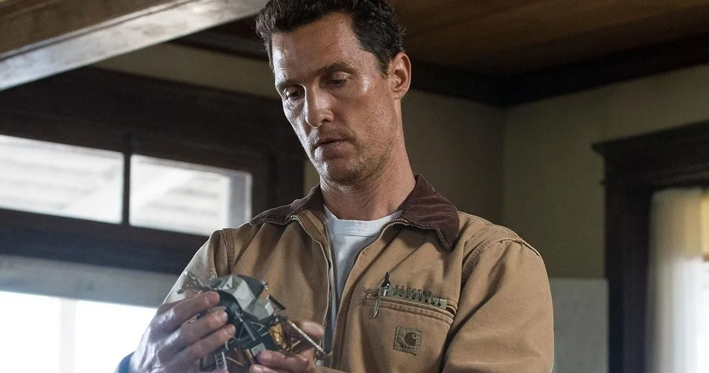
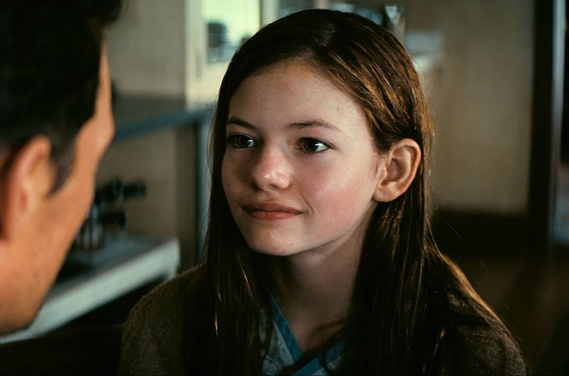
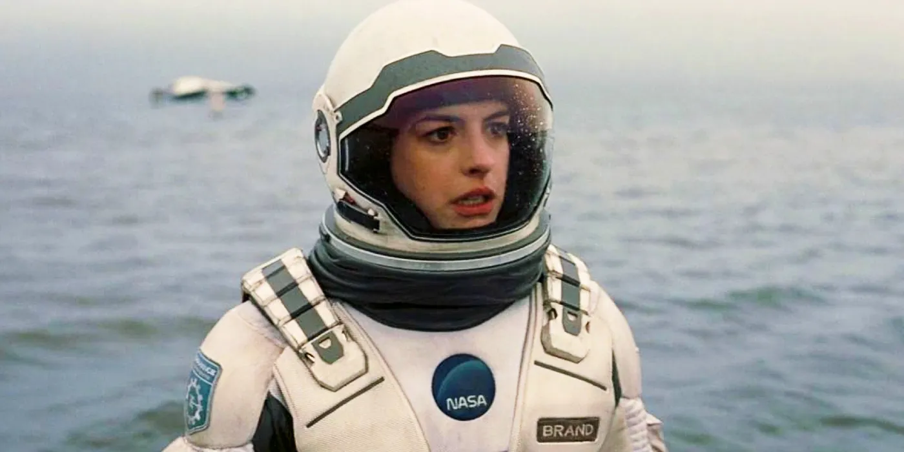
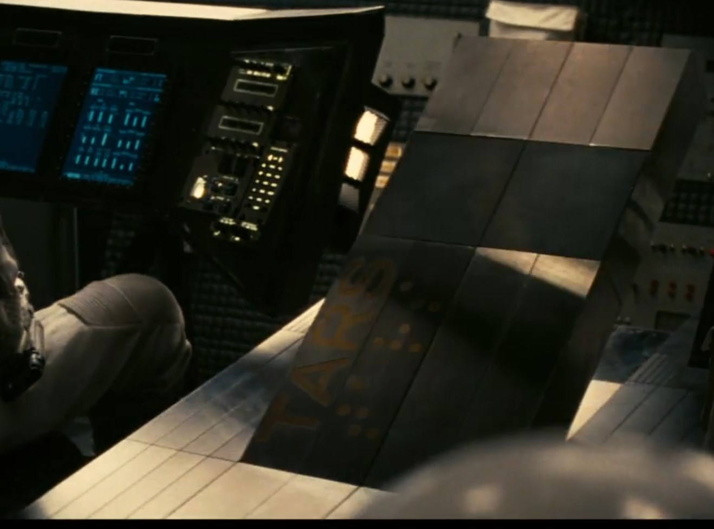
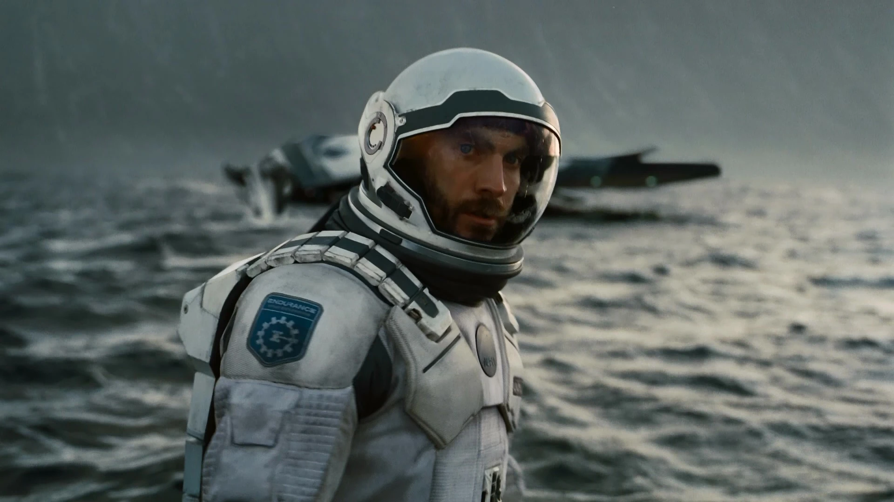

Interstellar: Characters
Joseph Cooper
Portrayed by: Matthew McConaughey
Cooper is a former NASA test pilot and engineer who finds himself thrust into a pivotal role in humanity's last hope for survival. Driven by a deep love for his family and a relentless sense of duty, he joins a daring mission to explore distant planets through a wormhole near Saturn. His skills and bravery are crucial as he navigates the complexities of space travel and the emotional challenges of leaving his loved ones behind. Cooper is courageous, resourceful, and deeply compassionate. His strong moral compass and unwavering commitment to his mission make him a natural leader, though his struggle with leaving his family behind adds depth to his character.
Murphy Cooper
Portrayed by: Jessica Chastain
Murphy, Cooper’s brilliant and determined daughter, grows up to become a key scientist working to solve the global food crisis and find a new habitable planet for humanity. Her father’s departure deeply affects her, driving her to uncover the mysteries of the universe and follow in his footsteps to ensure humanity’s survival. Murphy is intelligent, fiercely independent, and driven by both her scientific curiosity and her personal quest to understand her father's legacy. Her resilience and dedication play a crucial role in the film’s narrative.
Amelia Brand
Portrayed by: Anne Hathaway
Dr. Amelia Brand is a scientist and astronaut who plays a critical role in the mission to find a new home for humanity. With her expertise in theoretical physics and her strong moral convictions, she is a key figure in navigating the challenges of space exploration. Her relationship with Cooper evolves as they face the perils of their journey together.Amelia is passionate, compassionate, and determined. Her strong sense of duty and personal beliefs often lead her to make tough decisions, and her emotional depth adds a compelling dimension to her character.
Professor Brand
Portrayed by: Michael Caine

Professor Brand is the head of NASA’s clandestine project to save humanity and the father of Amelia Brand. His expertise in theoretical physics and his hidden knowledge about the mission's true objectives are central to the story. His actions and decisions significantly influence the course of the mission. Professor Brand is intelligent and driven, though his complex motives and the weight of his decisions reveal a man burdened by the responsibility of saving humanity. His relationship with his daughter and his secretive nature add layers to his character.
TARS and CASE
Portrayed by: Bill Irwin (TARS) and Josh Stewart (CASE)
TARS and CASE are highly advanced robots with crucial roles in the mission. They provide assistance with their technical skills, physical capabilities, and distinctive personalities. Their interactions with the crew offer both comic relief and valuable support, showcasing their unique programmed traits and evolving relationships with the humans. TARS and CASE are characterized by their distinct personalities and humor, which contrast with their robotic nature. Their practical and sometimes sardonic dialogue adds both levity and depth to their roles in the mission.
Dr. Doyle
Portrayed by: Wes Bentley
Dr. Doyle is a member of the mission team who, along with Cooper and Amelia Brand, ventures through the wormhole to explore potential new planets for humanity. His technical expertise and calm demeanor are vital in the high-stress environment of space exploration. Dr. Doyle is practical, focused, and dedicated. His steady presence and problem-solving skills are essential in managing the challenges faced by the crew.